Mushen family history: 400 years of American beginnings.
Nine of them sailed on the Mayflower. One founded a town
after a quarrel about baptism. Two sisters were hanged at Salem. Five fought in the
Revolution. One drove an ox wagon into Oregon and built a fort around his house.
Same family, the whole way through — and the name at the top of this page belonged
to the last people through the door.
Five crossings · in order
U.S. Patent No. 6,571 — E. & E. Gore, “Wind Wheel,”
3 July 1849. Granted to twin brothers, three years before they went west.
1620First landing
544Crossed an ocean
9Mayflower passengers
26Generations traced
Inland · 1620–1900
They crossed once. Then they walked.
Crossing the Atlantic was the short part. Once ashore, this family spent
the next two hundred and thirty years moving west across the continent — and because
every ancestor is dated and placed, you can watch it happen generation by
generation.
Each bar is one generation of ancestors, split
by the region of the country they died in. Read it from the top, deepest first.
New EnglandMid-AtlanticMidwestWest
1419
1377
12209
11250
10179
9101
8494
the Revolution
728
622
517
412
35
23
For six straight generations, New England holds between 85% and 95%. These people
landed in Massachusetts and simply stayed — marrying other colonists in the same
handful of towns, for a century and a half.
Then look at the step between the eighth generation and the seventh.
New England collapses from 85% to 39% in a single generation. Nothing about
that is gradual. It is the Revolution: Congress finished the war with no money and a
great deal of western land, and paid its soldiers in acres. The eighth generation
fought. The seventh generation moved.
After that it never comes back. The Mid-Atlantic peaks at 59%, the Midwest at 41%,
and by the third generation the family's centre of gravity is Oregon — three
thousand miles from Plymouth, having taken nine generations to get there.
1620Plymouth, Massachusetts —
the landing; then a hundred and fifty years of not moving
1636The Connecticut Valley —
Hartford, then Hadley in 1659 after the quarrel about baptism
1677Pennsylvania —
and from the 1720s the Ulster Scots pour into the same corridor
1709The Mohawk Valley, New York —
the Palatines, walking west off a failed naval-stores scheme
1750sVermont —
the northern frontier; 24 ancestors die there
1788Marietta, Ohio —
the Ohio Company; veterans cashing military warrants
1819Illinois —
and on through Indiana and Michigan
1850Charleston, Iowa —
the jumping-off place. Ebenezer Gore dies here, two years short
1852Rogue River Valley, Oregon —
six months by ox wagon. The continent is crossed
The recent generations are small — each generation back doubles the
number of ancestors, so the seventh has 28 people in it and the third has five. These
are not samples; they are the entire cohort. But two of the earliest dates in the
underlying data are simply wrong: a death in Massachusetts in 1605 and one in
Connecticut in 1602, both of which predate their colonies by decades. They are
left out. Bad dates cluster exactly where a tree is thinnest and nobody has
checked.
Part One · 1620–1640 · 472 people
The Great Migration
Twenty thousand English Puritans left for New England in
twenty years. It was not a trickle of adventurers; it was the organised evacuation
of a religious minority, and it emptied whole parishes.
I
They left a church they could not reform and a king who would not let them
try. Where they came from is the signature of the thing: overwhelmingly the
eastern counties, the heart of English Puritanism, which exported it wholesale.
A second, smaller stream came out of the West Country.
Three hundred and twenty-six of them died in Massachusetts Bay Colony and
fifty-seven in Plymouth. A further eight were born in Leiden — children of the
Separatist congregation that fled to Holland in 1608, spent twelve years in
exile there, and then crossed. Their birthplaces are Dutch. They were English
refugees twice over.
This is not a family that trickled over. It is a family that was inside an
event. At the twelfth generation back, 96% of known ancestors were born abroad.
Four generations later it has collapsed to 1%, and stays there.
Then they stopped moving. Five straight generations were born in America and
married other colonists in the same handful of towns. The family crossed the
Atlantic once, together, and did not move again for a century and a half.
Counties of origin
Suffolk
49 ancestors
Yorkshire
25
Essex
21
Norfolk
19
Kent · Wiltshire
17 each
Somerset
10
Plymouth · November 1620
Nine of them were on the Mayflower
A hundred and two passengers sailed from Plymouth in September 1620 in
a merchant ship built for wine, not people. Nine of them are direct ancestors. Half
the company was dead within four months.
James Chiltonc. 1556–1620 Canterbury
A tailor from Canterbury, and at sixty-four the oldest person aboard. He never
saw Plymouth. He died on 8 December 1620 while the ship still lay at anchor
in Provincetown Harbour, before the settlement existed — the first of the
passengers to die in the New World, in sight of it. He had sailed with his wife and
their youngest daughter Mary. Of the three, only Mary lived through the winter.
John Howlandc. 1592–1673 Fenstanton, Hunts.
A manservant, not a Separatist. Mid-Atlantic, in a gale, he came up on deck and
was thrown overboard. He caught hold of a topsail halyard trailing in the water,
held on while the ship dragged him under and out again, and was hauled back aboard
with a boat hook. He went on to outlive nearly everyone.
John Tilley1571–1621 Joan Hurst1568–1621
Husband and wife, and both dead by spring. John signed the Mayflower Compact and
helped explore the coast for a landing site. Neither survived the first winter,
which killed roughly half the company. They left behind a thirteen-year-old
daughter.
Elizabeth Tilley1607–1687 Henlow, Beds.
That daughter. Thirteen years old when she sailed, and orphaned in a foreign
country before she was fourteen. She survived, married John Howland — the servant
who had been pulled out of the sea — and lived to eighty. Nearly every Mayflower
descendant in America traces through her.
Dr. Samuel Fuller1580–1633 Redenhall, Norfolk
The colony's physician and surgeon, and a deacon of its church. He brought a
servant, William Butten, who died at sea within sight of land — the only passenger
lost on the voyage itself. Fuller spent thirteen years doctoring Plymouth and was
sent to help Massachusetts Bay through its own first sickness. He died in the
epidemic of 1633, still treating people.
Degory Priestc. 1579–1621 Leiden
A Separatist from the Leiden congregation who sailed without his wife
and two daughters, meaning to send for them once there was something to send for.
He died on 1 January 1621, in the first winter. His widow and daughters reached
Plymouth three years later, on the Anne.
Francis Cooke1583–1663 Leiden
Compact signer, and one of the few who lived a long life. His wife Hester and
their children followed on the Anne in 1623. Their daughter Jane — born in
Leiden during the congregation's Dutch exile — married Experience Mitchell at
Plymouth.
Francis Eaton1596–1633 Bristol
A carpenter, baptised at St Thomas's in Bristol, who sailed with his wife Sarah
and an infant son. In a colony with no buildings and a winter coming, a carpenter
was worth more than a gentleman. He survived that first year; the 1633 sickness
took him too.
Keep it in proportion: all nine together are 0.110% of total
ancestry. And nine is not nine coincidences — Plymouth was a hundred people, and within
two generations everyone had married everyone. What the number really says is that a
whole slab of this family was inside the founding.
No likeness of any of the nine survives. Genealogy sites attach this
Society emblem — the identical file — to five of them. They were ordinary people.
Portraits were for the wealthy.
Crossing I · the man overboard
John & Elizabeth Howland
c. 1592–1673 & 1607–1687 · married at Plymouth, c. 1624
Halfway across the Atlantic, in a gale, a servant named John Howland
came up on deck and was thrown over the side. He caught a topsail halyard trailing in
the water and held on while the ship dragged him under and out again, until they got
a boat hook into him and hauled him back aboard. Four berths away sat a
thirteen-year-old girl named Elizabeth Tilley, travelling with her mother and father.
By the following spring both her parents were dead of that first winter, along with
half the ship's company, and she was orphaned in a country with nothing in it.
Three or four years later she married the man who had fallen off the
ship. They had ten children, and every one of them survived to adulthood — an outcome
so unlikely for the period that it is the single reason their descendants now number
in the millions. Four of the nine Mayflower ancestors in this record are that
one knot of people: the servant who nearly drowned, the girl he married, and the two
parents who did not last the winter.
“…and though he was something ill with it, yet he lived
many years after.”William Bradford, Of Plymouth Plantation
The Connecticut Valley · 1636–1660 documented
Andrew Warner founds a town
Some ancestors survived history. This one built it.
Andrew Warner (c. 1595–1684) arrived in Massachusetts Bay in the 1630s,
then joined the migration that pushed inland to found Hartford on the
Connecticut River. He was an original proprietor — one of the men who held the town's
land in the beginning and parcelled it out.
Then, in 1659, he did it again. A doctrinal quarrel split the Hartford and
Wethersfield churches — a fight over baptism and church membership bitter enough that
the losing side chose to leave rather than submit. They moved twenty-five miles north
into the Massachusetts wilderness and founded Hadley.
The town's first town meeting was held at Andrew Warner's house on 8 October
1660. He served as juror, selectman and highway commissioner, and worked as a
maltster. Hadley became one of the major towns of the upper Connecticut Valley and
the parent settlement of several others.
What the town did nextwinter 1664
Four years after that first town meeting, two men arrived in Hadley in disguise.
Edward Whalley and his son-in-law William Goffe were regicides
— among the commissioners who had signed the death warrant of Charles I in 1649.
When the monarchy was restored in 1660 the new king's government hunted them across two
continents. They fled to New England, were moved from safe house to safe house, and in
the winter of 1664 they were taken to Hadley and hidden in the house of
Rev. John Russell, the town's minister — the same man who had led the seceders
out of Hartford.
They stayed for years. Whalley died there. The secret held for the rest of
Russell's life and was not common knowledge until he died in 1692, nearly three
decades later — in a town of a few hundred people, where everyone knew everyone's
business.
Which is the point worth drawing out. Hadley existed because a group of
Puritans had refused to bend on a question of baptism and would rather walk twenty-five
miles into the wilderness than submit. Those are precisely the people you can trust to
hide two men the King of England wants dead, and keep quiet about it for twenty-eight
years. The stubbornness that founded the town is the stubbornness that concealed them.
Andrew Warner lived in Hadley the whole time. He died there in December 1684, with
the secret still unbroken. In February 1679, in the middle of it, he is recorded taking
the oath of allegiance to the Crown at Hadley.
And the part that is not true. Hadley's famous story is the
Angel of Hadley: that during a King Philip's War attack in 1675 a white-bearded
stranger with an old sword appeared from nowhere, rallied the town's militia, drove off
the attackers and vanished — and that the stranger was Goffe, the old New Model Army
major-general, breaking cover to save the town that sheltered him.
It is almost certainly invented. There is no record of an attack on Hadley that
day. The tale seems to originate in a footnote in Governor Hutchinson's history of 1764
and was made famous by Ezra Stiles, President of Yale, in The History of the Three
Judges. Goffe really was hiding in Hadley in 1675; the angel is a story people told
afterwards.
It is kept here because the true version needs no help: two of the men who killed a king
spent years concealed in a house in a town this family founded, and the neighbours never
said a word. legend · not supported
A member of the family, Alice Williams Campbell (1924–2020),
was admitted to the Daughters of the American Colonists on Andrew Warner's
service.
The DAC is the quieter cousin of the better-known DAR, and it asks a different
question. The DAR wants an ancestor who served in the Revolution. The DAC
wants one who served the colonies before there was a revolution to serve — in
civil office, in a militia, or in the plain work of establishing a settlement, any time
between the first English landings and 1776. It exists to honour the people who built
the thing the Revolution was later fought over.
So the qualifying service here is not a battle. It is founding towns.
King Philip's War · 1675–1678 supported
The first American war
The Wampanoag had kept peace with Plymouth for half a century — it was the father
of their sachem who made the first treaty with the people off the Mayflower.
In 1675 that ended. The war that followed killed a greater share of New England's
population than any conflict in American history since, the Revolution and the Civil
War included. Twelve towns were destroyed outright. The colonists came close to
losing.
John Carter of Woburn was twenty-one, and in Captain Nathaniel
Davenport's company. That December they marched through frozen swamp in a
snowstorm against a fortified Narragansett town built on an island in the mire — the
Great Swamp Fight, one of the bloodiest single days in colonial American
history. The attackers went in across a single fallen log. Davenport was shot dead at
the head of his own company.
Carter came home. He lived another fifty-two years, made lieutenant, and lies in
Woburn's First Burial Ground under a stone that still names the war.
This is also the war the Angel of Hadley is supposed to belong
to — the phantom soldier who saved Andrew Warner's town in 1675. He did not exist. The
two regicides hidden a few doors away did.
Salem Village · 1692 · the fourth generation
Two sisters were hanged
Rebecca and Mary Towne, daughters of William Towne and Joanna Blessing
of Topsfield, were both executed in 1692. The descent runs through both of them, and
through their brother.
Rebecca Nurse was seventy-one, devout, and widely respected — which is
exactly what made her case notorious. The jury returned not guilty. The
accusers erupted; the judge invited the jury to reconsider a single ambiguous remark
she had made; they came back with a conviction. Thirty-nine neighbours signed a
petition on her behalf, which in that atmosphere was a dangerous act. She was hanged
on 19 July 1692.
Her sister Mary Esty was hanged on 22 September, among the last
eight. Knowing she would die, she petitioned the court — not for herself. She asked
that no more innocent blood be shed, and proposed that the accusers be questioned
separately and the confessors re-examined, because she was certain they were lying and
would be found out. It is one of the most extraordinary documents of the whole
episode. It changed nothing in time to save her, but the executions stopped that
autumn.
A third sister, Sarah Cloyce, was accused, imprisoned, and survived.
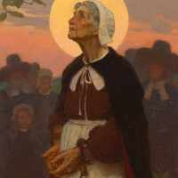
Rebecca Nurse — a memorial depiction. No likeness exists.
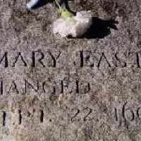
Mary Esty's stone — “hanged, Sept. 22, 1692.” One of
twenty benches at the Salem Witch Trials Memorial.
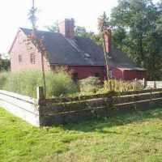
The Nurse homestead, Danvers — formerly Salem Village. Rebecca
and Francis's house, still standing.
The Towne family had a long land quarrel with the Putnams of Salem
Village, who were central among the accusers. Historians generally treat that as
material rather than coincidence. Spellings vary between Towne, Towen and
Town, because that is how the clerks wrote it.
Part Two · 1624–1664 · 16 people
New Netherland
While the Puritans were filling Massachusetts, a second set
of ancestors landed two hundred miles south, under a different flag, speaking a
different language, and built the town that became New York.
II
Utrecht, Amsterdam, Amersfoort, Hoorn, Arnhem — and Valenciennes in Hainaut,
which is the tell. The first settlers the Dutch West India Company put ashore in
1624 were not Dutch at all but Walloons: French-speaking Protestant
refugees who had fled the Spanish Netherlands and were living in Holland as exiles
when the Company offered them land.
Ghislain de la Vigne and Adrienne Cuvellier, both born at
Valenciennes, were among that first cohort in New Amsterdam; he was dead by 1632,
in the settlement's opening years.
Wolfert Gerritse van Couwenhoven (1584–1662) came out from Amersfoort
and helped establish the Brooklyn town of Flatlands — known then as New
Amersfoort, named for the place he had left. Nicasius de Sille
(1610–1673), a lawyer from Arnhem, arrived in 1653 as a councillor to Peter
Stuyvesant and was among the founders of New Utrecht, where he died.
The English took the colony in 1664 without a shot; Stuyvesant surrendered
rather than see the town burned. The Dutch families simply stayed and became
English subjects — which is why these death places read Brooklyn, Bushwick,
Flatbush, Flatlands and New Utrecht. Dutch villages that are now neighbourhoods,
still carrying their names.
1624The first Walloon families land at New Amsterdam
1630Van Couwenhoven arrives from Amersfoort; Flatlands follows
1653De Sille sails as councillor to Stuyvesant
1664Stuyvesant surrenders; New Netherland becomes New York
Part Three · 1709–1760 · 21 people
The Palatines
The winter of 1708 was the coldest in five hundred years.
Wine froze in the barrel; birds fell out of the air. It came down on a Rhineland
already wrecked by decades of French invasion, and it broke the region.
III
Around thirteen thousand people went down the Rhine to Rotterdam and on to
London in 1709, camping in fields outside the city while Queen Anne's government
decided what to do with them. Britain shipped roughly three thousand to New York
to make tar and pitch for the Royal Navy.
The scheme failed within two years. The Palatines walked west into the Mohawk
Valley and took the land instead. That is exactly where these ancestors end up —
Klock, Dygert, Fuchs, Etel and Riemensnyder all die at Palatine, Stone Arabia,
German Flatts, Schoharie and Herkimer.
Which put them, two generations on, in the worst possible place. In August 1777
the Tryon County militia walked into an ambush at Oriskany — among the
bloodiest engagements of the war by proportion of men lost, fought at close
quarters against Loyalist neighbours and Iroquois allies.
Oriskany · 6 August 1777
Sgt. Johannes Peter Ritter
Born Mainz 1720. Died on the day of the battle, at the place of the battle.
His record carries 29 sources, making him one of the better-attested people in
this entire tree.
Catharina Riemensnyder
Died in Oneida the same day.
Anna Barbara Riemensnyder
Died at Oriskany the following April. Whatever happened to that family in
those months, it happened to more than one of them.
Part Four · 1718–1775 · 12 people
The Ulster Scots
Scottish twice removed: Lowland Presbyterians planted in the
north of Ireland in the 1600s, who left again a century later when Ireland turned
out to be no better.
IV
County Londonderry gave the Gilmores, County Donegal the Borlands, County
Antrim the Templetons, County Down the Campbells. They left over rack-rents,
tithes owed to a church they did not attend, and laws that barred Presbyterians
from public office.
Almost to a person they landed in Pennsylvania — Cumberland, Franklin,
Westmoreland, Mercer and Armstrong counties, the Scots-Irish corridor running down
the back of the Appalachians. The one exception proves it: William Jamison
died at Windham, New Hampshire, next door to Londonderry, New Hampshire — a town
founded in 1719 by emigrants from Ulster and named for the place they came
from.
The sisters in the holdfamily tradition
The Gilmores were Covenanters — Presbyterians whose refusal to accept
bishops or royal authority over the church had got them killed in Scotland and
planted in Ireland.
The family story says Robert Gilmore and his brother were permitted to
emigrate but their two sisters were not. So the brothers smuggled them
aboard and hid them in the hold until the ship was far enough out to sea that
turning back was not worth the captain's trouble.
No ship has been identified. Eighteenth-century passenger lists are patchy and
the names are common. It is recorded here as tradition — but it belongs to a real
migration, and the family it describes really did land in Pennsylvania and really
did produce a Continental Marine.
The Revolution · 1775–1783 · crossings I, III and IV
Five patriots, three crossings
By the Revolution the waves had been in the country long enough to stop
being separate. These five men came down from three different migrations — English
Puritan, Rhineland German, Ulster Scot — and ended up in the same army.
Ebenezer Nye1750–1823 Tolland, Conn.
The best-documented soldier in the family. A private in Captain Bulkley's
Company, 3rd Regiment of the Connecticut Line — the Continental Army, not
militia — paid continuously from 1 January 1781 to 31 December 1783. Three
full years, through Yorktown and to the end of the war. Two independent archives
hold him: Connecticut Men in the Revolution, p. 331, and the Connecticut
Archives return of the army for 1781–82. documented
Timothy Warner1763–1852 Connecticut
Andrew Warner's descendant, and the family's formally certified patriot. A
Daughters of the American Revolution certificate issued 26 June 2006 —
National No. 843403 — admits a direct descendant on the strength of his service. He
was twelve when the shooting started and not yet twenty when it ended.
documented
Robert Gilmore1759–1828 Co. Londonderry
An Ulster immigrant who enlisted on 28 August 1776 — seven weeks after the
Declaration — as a private in Captain Robert Mullan's Company of Marines.
Mullan kept Tun Tavern in Philadelphia, where the Continental Marines had been
raised the previous winter; his was among the first companies the corps ever
mustered. A Pennsylvania State Library certification of 1925 preserves the
record.
Sgt. J. P. Ritter1720–1777 Mainz
The only one who did not come home. Born in the Rhineland, carried to New York as
a child of the Palatine resettlement, and killed on 6 August 1777 at
Oriskany — the single worst day the Mohawk Valley militia ever had. He was
fifty-seven years old and fighting within a few miles of his own farm.
Paul Plumer1746–1831 Rowley, Essex Co.
Twenty-eight and living in Essex County, Massachusetts when the war reached
Lexington — the county that mobilised harder than almost any other. He appears on a
national patriot register with his wife Hannah Woodbridge. Recorded as
Major, though whether that rank came from the war or a later militia
commission is unsettled.
The Northwest Territory · 1788–1795
Paid in western acres
This is the hinge. The single generational step where New England stops
being where this family lives.
When the war ended, Congress had land but no money, and paid its veterans in
western acres. The Ohio Company of Associates — largely New England officers
and soldiers cashing in military warrants — founded Marietta in 1788, the first
organised American settlement in the Northwest Territory. It was not a drift. It was a
government finding a way to settle its debts, and it moved a whole generation of New
England families over the mountains in twenty years.
Twenty-two ancestors died in Ohio between 1797 and 1861, and four of the same
generation died in one Ohio county. Ebenezer Nye — the Connecticut
soldier who had been paid continuously through Yorktown — went out to Marietta in 1790
and on to Rainbow in 1795, where he preached, held civil office, and donated the
ground that became the village burial place. He was then buried in it. His
sandstone marker still stands, and the Marietta DAR marked the grave.
My Saviour shall my life restore, And raise me from my dark
abode, My flesh and soul shall part no more, But dwell forever near my God.
Ebenezer Nye, d. 27 February 1823 · Rainbow Cemetery, Ohio
Ebenezer Porter (1732–1827) of Ipswich was among the last of the Ohio
Company party to reach Marietta in July 1788, and died at Little Hocking at
ninety-four; his own Revolutionary service is claimed but not yet proved.
Lydia Cummings and Solomon Fuller are buried in the same county.
The Revolution did not just end for this family. It relocated them — and everything
west of here follows from it.
The northern frontier · 1750s–1791
The Republic of Vermont
Before the family went west, it went north — into land three colonies
were arguing over, which solved the argument by declaring itself a country.
Twenty-four ancestors died in Vermont, in records running from the 1740s to 1853:
Halifax, Bennington, Guilford, Weathersfield, Hardwick. It was the cheap frontier for
crowded Connecticut and Massachusetts families, and both New York and New Hampshire
claimed it, having sold overlapping titles to the same acres.
In 1777 the settlers stopped waiting for a ruling and declared an independent
republic. Vermont was its own country for fourteen years — with its own
currency and its own postal service — until it joined the union in 1791. Several of
these death records still carry the jurisdiction as it stood:
Bennington, Republic of Vermont. Some ancestors here died as citizens of a
country that no longer exists.
And Vermont is where the Gores were waiting. Amos Gore went up from Norwich,
Connecticut to Halifax in the 1750s. His son Ebenezer was born there in 1793,
and his grandson Emerson in 1824. Three generations in one Vermont town — and
then the whole line picks up and leaves for Iowa, and after Iowa, Oregon.
Place names in the record are normalised to modern jurisdictions, so
“Republic of Vermont” is also applied to deaths before 1777, when
no such republic existed. The label is the database's, not the clerk's — worth knowing
before quoting one as evidence of anything.
Part Five · 1840–1870 · 8 people
The Industrial Crossing
Two hundred and twenty years after the Mayflower,
with the family long since American, eight more people got on ships. They were not
fleeing a bishop or a king. They were going where the work was.
V
Kilmarnock in Ayrshire sent Robert Linton (1841–1919) and Elizabeth
Smith (1846–1938), out of the Scottish weaving belt. Ireland sent Hugh
Linton, Agnes Mitchell and Alexander Campbell. England sent one man.
They did not go to farmland. They went to Pawtucket and Providence, Rhode
Island — the birthplace of American industry, where Samuel Slater had built
the country's first water-powered cotton mill in 1793 — and to Worcester,
Massachusetts. The others went into coal and iron in Armstrong County,
Pennsylvania. What Robert Linton actually did for a living in Pawtucket is not yet
established — a Linton Brothers & Co. was manufacturing cardboard on
Bailey Street from 1871, employing twenty to thirty hands, but the surname is all
that connects them so far. What he did in the evenings is much better attested.
The last man through the door1840–1917
Albert Mushen was born in England and died at Worcester, Massachusetts.
He sits four generations back — recent enough to have been photographed, had
anyone thought to.
And this is the part worth sitting with. Of the 544 people in this record who
crossed an ocean, the one who carried the surname at the top of the page
was among the last eight to arrive. Nine ancestors were already standing at
Plymouth in 1620. Two hundred and twenty years of Warners, Gores, Nyes, Townes and
Howlands had founded towns, been hanged, fought two wars and buried each other in
New England ground before anyone in this family was called Mushen at all.
A surname travels down one thread out of thousands. On this page, the name is
the newest thing in the building.
Vermont → Iowa → Oregon · 1852 documented
The Gores go west
One surname carries the entire American migration, coast to coast, in
nine generations.
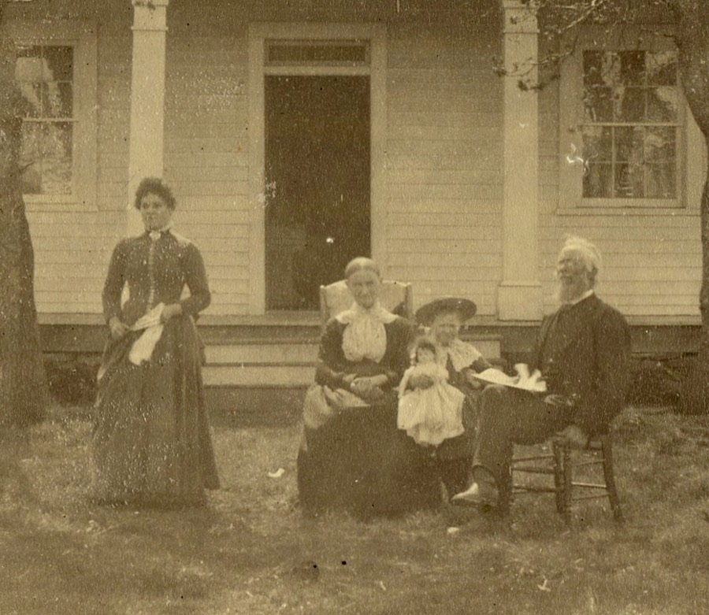
Emerson Elijah Gore (1824–1910) and Mary Elizabeth Gilmore Gore
(1827–1893), at their house in the Rogue River Valley about 1890.
1606 John Gore Alton, Hampshire → Roxbury, Massachusetts Bay
1652 Samuel Gore Roxbury
1681 Samuel Gore Jr. Roxbury → Norwich, Connecticut
1707 Samuel Gore III Roxbury → Voluntown, Connecticut
1753 Amos Gore Norwich → Halifax, Vermont
1793 Ebenezer Gore Halifax → Charleston, Iowa — died 18501824 Emerson E. Gore Halifax → Phoenix, Oregon1869 Edward E. Gore Phoenix → Medford, Oregon
1911 Beulah L. Gore Oregon
The inventors3 July 1849
Emerson and his twin brother Emery were cabinetmakers, and better with
machinery than that suggests. Three years before they went west, the two of them were
granted U.S. Patent No. 6,571 for a wind wheel — a vertical-shaft
machine, two tiers of angled sails turning about an upright timber shaft, carried on a
tapered eight-sided trestle and driving a toothed ring gear at the base. Most American
windmills of the period turned on a horizontal axis like a Dutch mill. This one does
not.
Twenty years later, in Oregon, Emerson patented a gang plough praised for being
manageable “by a boy of twelve.” It was said the only real difference
between the twins was that one was a Baptist and the other a Presbyterian.
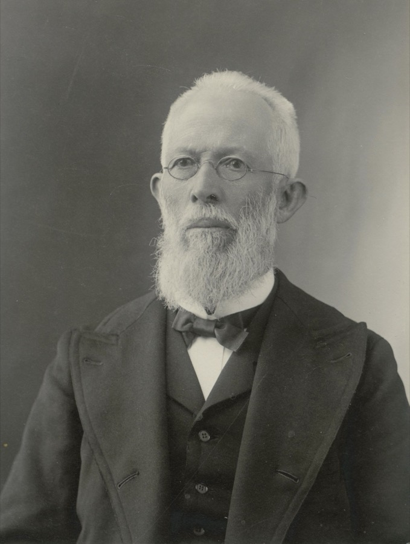
Emerson Elijah Gore (1824–1910).
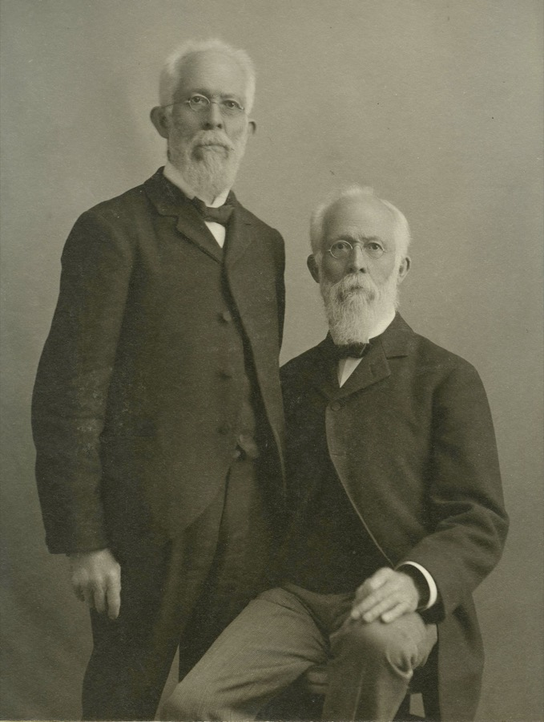
Emerson and Emery. The only difference anyone could find between them
was that one was a Baptist and the other a Presbyterian.
The widow and the teacher1849
Mary Elizabeth Gilmore was born in Pennsylvania, granddaughter of the
Covenanter migration and daughter of Robert Gilmore the Marine — which is how two of
these five crossings finally meet in a single marriage. She lost her father young and
her mother not long after. She had read the whole Bible before she was seven. She
married, was widowed almost immediately — her first husband, a Mr. Rose, died within a
year — and supported herself as a schoolteacher.
She married Emerson Gore on 20 September 1849. Her son by her first
marriage, Lewis Albert Rose, went west with them.
The crossingApril–September 1852
They left Charleston, Iowa on 27 April 1852 in an ox-drawn train of about
forty wagons and reached the Rogue River Valley on 27 September. Six months.
Mary was pregnant the entire way.
Emerson's father Ebenezer had died at Charleston two years earlier. The family had
been inching west for two generations — Vermont, Ohio, Illinois, Iowa — and he did not
live to finish it.
The plain seemed to be literally covered, a moving mass of
buffalo… Buffaloes passed between each wagon and the team behind but I heard of no
accident resulting.Walter Scott Gore, born at the trail's end, 3 December 1852
When the cattle stampeded and the wagon ran toward a bluff:
As they neared the bluff, Mother stood up… and with all the
commanding tone she could put into her voice said “Whoa, Buck,” who
sat back and stopped the team.
The stockade1853
They arrived into a war. The Rogue River Wars were running, and in the summer of
1853 the Gores built a fort on their donation claim, at what is now the junction of
Highway 99 and South Stage Road, south of Medford. It sheltered “settlers for
miles around at times of Indian excitement,” with their families, stock and
possessions. One recorded panic turned out to be men chasing a bear.
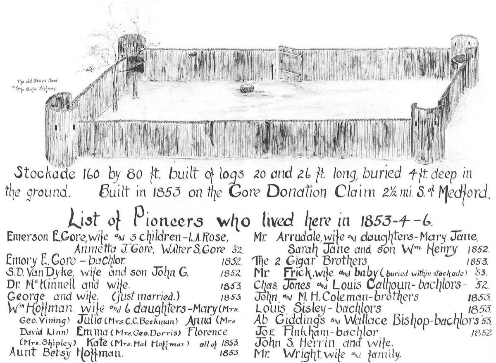
The Gore Stockade, drawn about June 1934 for Oregon's Diamond
Jubilee from the recollections of people who had been inside it. Printed in the
Table Rock Sentinel, May 1985. Southern Oregon Historical Society; via
truwe.sohs.org.
The drawing is not a picture of a building. It is a measurement, made by
someone who wanted the thing recorded before the last of them died. It gives the
stockade as 160 by 80 feet, built of logs 20 and 26 feet long, buried four feet
deep in the ground — and then, beneath it, does something no photograph could: it
lists everybody who lived there.
List of Pioneers who lived here in 1853-4-6. First line:
“Emerson E. Gore, wife and 3 children — L. A. Rose, Annetta J. Gore, Walter
S. Gore '52.” Second line: “Emory E. Gore — bachelor, 1852.”
Those are people already on this page. L. A. Rose is Lewis Albert Rose, Mary's
son by the first husband who died within a year of marrying her. Walter S. Gore
is the boy born on 3 December 1852, three months after the wagons stopped — the one
who grew up to write down the buffalo and “Whoa, Buck,” and to become
Medford's first school principal. He was an infant inside this fence. Emory is
the twin, and the co-inventor on the 1849 patent at the top of this page, listed here
as a bachelor.
The rest of the column is the whole neighbourhood — the Hoffmans and their six
daughters, Dr. McKinnell and his wife, the Geiger brothers, a string of bachelors, and
a line that stops you: “Mr. Frick, wife and baby (buried within stockade)
'53.”
On whether it was there at all. When the Historical Society
printed this drawing in 1985 it ran without attribution, and the society afterwards
distanced itself from any claim that the stockade had ever existed — there being no
documentary evidence for it at the time. It was, in other words, exactly the kind of
thing this page grades as family tradition.
It has since been substantiated. Later research located the notes the 1934 drawing was
prepared from, and independent contemporary accounts describe families in the valley
“forting up” that season, with three forts built and filled. The stockade
stood on or near the site of today's Southern Oregon Nursery. A family story that was
officially doubted for decades turns out to have been true, and specific.
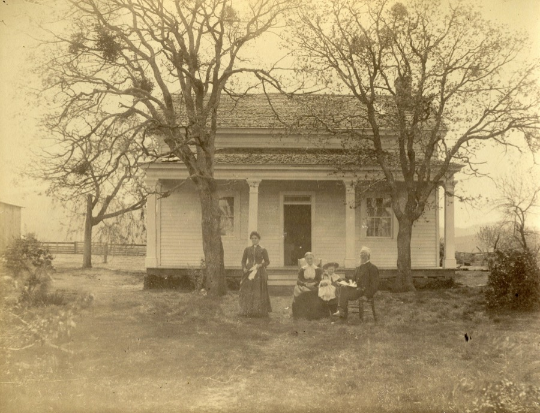
The Gore house about 1890, on the donation claim. The stockade stood
here.
The violin
The Gores farmed beside an Indigenous village and, unusually, got on with their
neighbours. Mary nursed the sick and fed them. Emerson played the violin.
Then one day during the troubles an armed party came to the house. They did not
attack. They came inside, sat down in a circle around Emerson, and the chief motioned
for him to play.
So he played. He played until his arms gave out, and he did not stop — because he
did not think he was permitted to stop — until the chief finally signalled that he
could. Then they left.
Family memory holds that the music was part of what kept them safe. When the war
came in 1854 the account records that the Indians “took up their luggage, went
past Father's home, took the trail over Jacksonville hill” — passing the Gore
place untouched, with every opportunity to do otherwise. Of Mary, the chief had said
simply: she has a good heart.
The family's own record does not pretend this was innocence. It states
plainly that the settlers were interlopers. What it claims is narrower and more
credible: that these particular people behaved decently to their neighbours, and that it
was remembered.
Afterwards
Early years were thin — six weeks living on beef without salt, salt at a dollar an
ounce, seven dollars for a squash. Emerson farmed, did carpentry on the buildings of
Jacksonville, and ran a sawmill on Bear Creek with Emery until the flood of 1861–62
carried it off. The family went on to orchards, livestock, shops, schools and banks.
Walter — the boy born three months after the wagons stopped — became Medford's
first school principal.
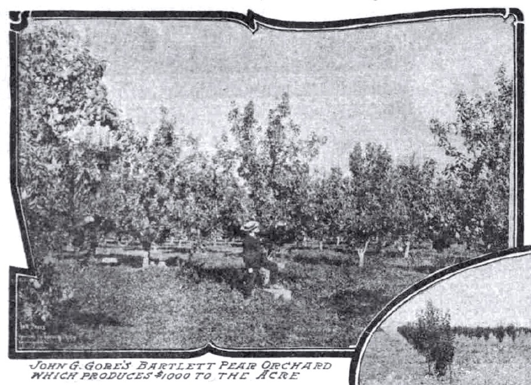
The pear orchard about 1907, planted 1888 on the original 1852 claim.
Sunday Oregonian, 5 September 1909.
Mercer County, Pennsylvania · 1827–1844
A spelling book and a Bible
Her father was a Covenanter who had smuggled his sisters out of Ireland,
fought the Revolution, and was sixty-eight years old when she was born. He was dead
before she could walk.
Robert Gilmore and his brother came out of the north of Ireland
“of Scotch-Irish descent and Scottish Covenanters in religious belief, fleeing
from persecution to gain religious liberty in the new world,” and settled in
Mercer County, Pennsylvania. He was a blacksmith. He married Nancy Smith, who
was some twenty-nine years his junior, and took her on a wedding journey of forty miles
on horseback to a house she could not find — it was hidden behind a stump until they
rode around it, and she was, the family says, dismayed.
Mary Elizabeth was born on 6 February 1827, when her father was sixty-eight
and her nearest sibling was five years older. On 14 June 1828 he died of cancer
of the face. She was sixteen months old. Whatever she knew of the stowaway crossing,
Tun Tavern and Captain Mullan's Marines, she knew at second hand, from a house he was
no longer in.
What she read
Because she was so much younger than the rest, she became her mother's constant
companion, and her sweetest memories were of walking in the woods with her. She had two
books. Her earliest textbooks were a single spelling book and the Bible, which she
had read through before she was eight years old. A second account in the same
family record puts it earlier still — that she had read the Bible in its entirety
before she was seven.
In the yard stood a chestnut tree too large for her to reach anything on. So she sat
underneath it and watched the squirrels drop the nuts, and ran and picked them up. It
was, she wrote, her only way of getting those particular chestnuts.
Her sister Jane was four during the War of 1812 and could already read, which
most of the pioneers could not. Jane sat on a bench in their father's blacksmith shop
and read the newspaper aloud to the men who came in with work.
These stories are hers and her granddaughter's, from
the family record. Mary taught school in Mercer County
to earn the money for her own wedding.
She had a number of very lovely calico dresses, and spun and wove her household linen.
When Lewis Rose died in Iowa two years later, leaving her with a four-month-old son,
she went back to teaching to support them both — walking the boy to her mother every
morning and collecting him after school.
A correction to the family story. Mary is often described as
having been orphaned. The record does not support it. Her father died when she was
sixteen months old, but Nancy Smith lived until 1 January 1856 — twenty-eight
years a widow, and still alive in Lee County, Iowa, when Mary drove west in 1852. The
parting was not a death. Mary left her mother behind on the Iowa prairie at
twenty-five, and never saw her again.
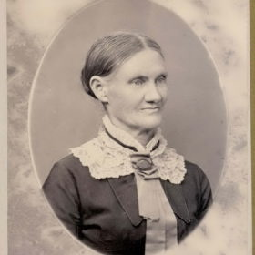
Mary Elizabeth Gilmore Gore, late in life. She died in 1893 at
sixty-six.
Crossing V · where the record becomes a photograph
Mary Elizabeth Gilmore
1827–1893 · Pennsylvania → Oregon · teacher
She is the join, and she is one generation from Ulster.
Robert Gilmore — the brother who smuggled his two sisters aboard the ship in
County Londonderry, and the private who enlisted in the Continental Marines seven weeks
after the Declaration — was not her grandfather. He was her father. Same man,
both stories. She was the youngest of his ten children, married at not quite eighteen,
and widowed inside two years — then married Emerson Gore on 20 September 1849, three
years to the day after her first husband died. She crossed two thousand miles of
plain while pregnant, talked a stampeding ox team to a standstill, and is credited in
the local histories as one of the first four white women to settle permanently in
the Rogue Valley. She had ten children of her own — five boys and five girls.
She nursed her neighbours through the Rogue River Wars and was
remembered by the people on the other side of that war as the woman with a good heart.
When she was in the garden, the account says, they would come up to the house and look
in at the windows to tease the children, who would scream and push the furniture
against the door, to everyone's amusement but theirs.
In her last weeks she wrote her own history in pencil, a few words at
a time, in the presence of her daughters Ida and Ella. It was transcribed thirty-three
years later. It breaks off mid-sentence — “In 1857—”. Which is,
as it happens, the year she did the thing her name is cast in bronze for.
Read her memoir in full at
truwe.sohs.org → Her own words, alongside the family reminiscences, her 1877
letter to her daughter Ella at the Ashland Academy, and the newspaper obituaries.
Nearly everything on this page about the Gores comes from there.
“John, we are not given sight and faith at the same
time.”Mary Elizabeth Gilmore Gore, to her son · 17 October 1893
Jacksonville, Oregon · 22 November 1857 documented
Her name is on the plaque
Four years after she arrived, Mary Gore helped organise the first
Presbyterian church in Jackson County — and a bronze tablet on the building names her.
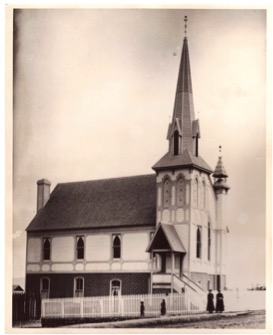
The church at California and 6th, built 1880–81.
Photograph by Peter Britt, c. 1885. Oregon Collection, University of Oregon
Library.
Dedicated to the memory of Rev. M. A. Williams and the following
noble pioneers who organized this church November 22, 1857 — Wm. Hoffman · Caroline
Hoffman · Elizabeth Hoffman · J. D. Van Dyke · Keziah Van Dyke · Wm. Wright · Jane
Wright · A. J. Butler · E. P. Rand · Mary Gore
Dedication tablet, Jacksonville Presbyterian Church
Ten names. Hers is the last of them, and it stands alone — the Hoffmans,
the Van Dykes and the Wrights are all listed as couples or families. Emerson is not on
the tablet. Mary is.
The congregation was organised in William Hoffman's house on 22 November
1857 by Rev. Moses Allen Williams, the missionary whose diary that same year
records calling on Emerson Gore at his sawmill. Williams went on to plant Presbyterian
churches at Phoenix, Eagle Point, Medford and Klamath Falls. Thirty-six years later he
buried her.
Now compare it with the stockade
Read the ten names on that tablet against the list of families written on the 1934
drawing of the Gore stockade, four sections above, and the same households keep coming
back:
Goreplaque + stockade
Mary Gore on the tablet. “Emerson E. Gore, wife and 3
children” on the stockade roster, 1852.
Hoffmanplaque + stockade
Wm., Caroline and Elizabeth Hoffman on the tablet. “Wm.
Hoffman, wife and 6 daughters” and “Aunt Betsy Hoffman”
in the stockade, 1853. The church was organised in his front room.
Van Dykeplaque + stockade
J. D. and Keziah Van Dyke on the tablet. “S. D. Van Dyke, wife
and son John G.” in the stockade, 1852 — one initial apart between a
handwritten roster and a cast plaque.
Wrightplaque + stockade
Wm. and Jane Wright on the tablet. “Mr. Wright, wife and
family” in the stockade.
And two of the ten are sisters
Keziah Van Dyke, third name in the second column of the tablet, was born
Keziah Gilmore on 6 February 1809 — Robert and Nancy's third daughter, and
Mary's own sister. She married S. D. Van Dyke in 1834.
They did all of it together. Mary's memoir opens the crossing with
“we, the Van Dykes and us, started to cross the plains”; the
stockade roster lists “S. D. Van Dyke, wife and son John G., 1852”
a few lines below the Gores; and in 1857 both sisters put their names to the same
church. When Mary was widowed in Iowa and teaching school to feed her infant son, it
was with Keziah that their mother was living, and Keziah's house where she left the
boy each morning.
The two of them were born on the same day of the year, eighteen years apart.
Eight of the ten people named on that tablet had sheltered together
inside the Gore stockade, and two of them were Gilmore sisters. Only A. J. Butler and E. P. Rand are not stockade names.
In 1853 these families were sitting out a war behind a double row of logs on the Gore
donation claim. Four years later the same people walked into William Hoffman's house
and founded a church.
The fort became the congregation. Nobody wrote that down — the drawing and the tablet
were made seventy-seven years apart by different people for different reasons, and
neither mentions the other. It only appears when you put the two lists side by side.
Phoenix, Oregon · 1875
And the one behind her grave
She did it twice. Eighteen years after Jacksonville, Mary was among the founders of
the First Presbyterian Church of Phoenix, organised in 1875 with Moses Williams
again as its first pastor. She taught its Sunday school.
That church stood on the parcel where the Phoenix Historical Society Museum is
today — land afterwards sold to the Phoenix Cemetery Association. Which confirms,
to the yard, the sentence in the family record: she was laid to rest
“in the little cemetery back of the little church (Presbyterian) she had
helped to found” on 18 October 1893.
The church was behind her. It still is.
Ireland · where the record burns
The lines that stop in 1789
The Gaelic Irish lines in this family do something none of the others do. They
stop — abruptly, at births clustered between 1720 and 1821, half the depth of every
other origin. English lines run twelve generations back. Irish lines die at
six.
The reason is a fire. On 30 June 1922, at the opening of the Irish Civil
War, the Public Record Office of Ireland burned in the Four Courts, taking the censuses
of 1821 to 1851, half the Church of Ireland parish registers, and nearly every will and
probate record — seven centuries of documents. The 1861 and 1871 censuses had already
been pulped by the government; 1881 and 1891 went for paper salvage in the First World
War. No Irish census survives intact before 1901.
Under the Penal Laws most Catholic parish registers do not begin until 1820 or
later, so beneath the fire there is a second wall where there was never anything to
burn.
Two Irish lines here do reach ten generations — Margaret Clark,
born Londonderry 1692, and William Jamison, born 1697. They survive precisely because
they left early: their descendants emigrated in the 1710s, so the families
appear in American church books, land grants and probate, which never burned. The
deepest Irish ancestry in this family is legible only where it stopped being
Irish.
1850s–1978 · both sides of the family
A violin, and then a music department
One thread runs the length of this record and does not stop. It starts in
a cabin in the Rogue River Valley with a man playing until his arms give out, and it ends
with a university band programme.
It is not one thread. It is three, running down three separate lines that
had never met — one from Oregon, one from Ayrshire by way of a Rhode Island mill town,
one from Ulster by way of western Pennsylvania. Each of them produced musicians for
roughly a century before any of them married into the others.
First line · the Rogue River Valley1850s–1984
Emerson Elijah Gore (1824–1910) played the violin — for his neighbours, and
on the day an armed party sat down in a circle in his house and the chief motioned for
him to keep going.
His sons had a quartet, furnished music for occasions across the valley, and
were active in all the church music. William H. Gore directed many church
choirs.
Hattie Warner Gore (1873–1966) married Emerson's son Edward in 1899 and
became the valley's musical institution in her own right. She taught piano in Medford
for forty-three years, contributed to music publications while she taught, and
wrote the concert reviews for the Medford Mail Tribune for twenty
years. She represented the State Federation of Music Clubs locally and kept one of
the largest private collections of concert programmes in the state, running back to
1882. She was also the first woman to serve on the Medford School Board, for
three terms, and sang in the Presbyterian choir into old age.
Her daughter Beulah Lucretia Gore (1911–1984) also taught piano.
Mother and daughter, the same instrument, the same trade.
Second line · Pawtucket1841–1919
Robert Linton came out of Kilmarnock, Ayrshire in 1841 and died at
Pawtucket, Rhode Island in 1919 — one of the eight people in the last crossing. And a
history of the Pawtucket Band, a substantial brass-and-reed ensemble
incorporated in Rhode Island in 1880, lists its successive conductors as William
Gilmore, William H. Apelles, T. J. Allen, A. D. Harlow, Mr. Russell,
Robert Linton, and Jesse Linton.
Two Lintons, consecutively, at the head of a nineteenth-century New England town
band. Not a man who played at home — a man who stood in front of an ensemble,
and then handed it to another Linton.
supported · single source
Third line · Cornell and Corvallis1947–1978
And from a line with no Gore blood, no Oregon and no Rhode Island — a Pennsylvania
Campbell four generations out of County Down — William Alexander Campbell
(1913–1999) was Director of Bands at Cornell for nineteen years and then
chaired the Music Department at Oregon State.
Where they meet
Beulah Gore, the piano teacher, married Samuel Albert Mushen — Robert Linton's
great-grandson. That is lines one and two, a Medford piano bench and a Pawtucket
bandstand, joined in one marriage. Their son's marriage brought in line three.
Three families, three countries of origin, three centuries of arriving
separately — and each of them, independently, kept turning out people who taught,
conducted, reviewed, or led. Nobody was passing an instrument down; they had no contact
until they married.
It is the one trait on this page that shows up in every line rather than
travelling down one of them.
Armstrong County → Oregon · 1913–1999
The last join
Every crossing on this page is a line arriving separately. This is where
the last two of them finally meet, in one marriage, in the twentieth century.
William Alexander Campbell, son of James M. Campbell (1874–1933) and
Margaret E. Ross (1884–1952), was born on 2 February 1913 at Dayton,
Armstrong County, Pennsylvania — which is not a coincidence of geography. It is the
same small town where his grandfather Alexander B. Campbell, born in Ireland in
1828, had died four years earlier; and his great-grandfather Alexander Campbell,
born in County Down in 1796, died just up the road at Rural Valley. Three
generations of Campbells stayed inside one Pennsylvania county after coming off the
boat. William was the fourth, and the one who left.
He died on 25 November 1999 in Benton County, Oregon — three thousand miles
west, in the same state the Gores had reached by ox wagon a century and a half before
him.
What the marriage joins
He married Alice Louise Williams (1924–2020) — the same Alice Williams
Campbell who was admitted to the Daughters of the American Colonists on Andrew
Warner's service, nine generations up.
So look at what that wedding actually connects. She carries Crossing I: the
Great Migration, Massachusetts Bay, the Connecticut Valley, Hartford and then Hadley
after the quarrel about baptism. He carries Crossing IV: Lowland Presbyterians
planted in Ulster, out of County Down, down the Scots-Irish corridor into western
Pennsylvania, and four generations in Armstrong County.
Those two streams entered the country a hundred years and six hundred miles apart
and had no reason ever to touch. Andrew Warner was laying out house lots at Hadley in
1660. The Campbells were still in County Down. It takes until the twentieth century,
and these two people, for the lines to run into each other — and everything on this
page is downstream of that.
The war, and then the band room
He served in the United States Army in the Second World War. Then he spent
thirty-one years running two university music programmes.
From 1947 to 1965 he was Director of Bands at Cornell — nineteen years, at
the head of the Big Red Bands; Maurice Stith succeeded him in 1966. That was the year
Campbell came west to Oregon State University, hired to lead the Music
Department after Robert Walls stepped down. He chaired it from 1966 to 1978.
The university's own archives describe what he did there: Campbell “broadened
the department's music curriculum and improved physical facilities, to include a
music listening center.” In 1967 the department established Bachelor of
Science and Bachelor of Arts degrees in Music, with three areas of concentration —
applied music, music history and literature, and theory and composition. He handed the
department to David Eiseman in 1978.
His service record is the one thing still unproved. That he
served in the U.S. Army in the Second World War is family knowledge, and it is recorded
here as that, because no service document has been produced for it. It sits at the newest
end of the tree rather than the oldest, which is not where you expect to find a gap.
There may be a reason for that. On 12 July 1973 the National Personnel Records
Center in St. Louis burned, and took with it roughly eighty per cent of United States
Army personnel files for servicemen discharged between 1912 and 1960. No index, no
microfilm, no duplicate. It is the same problem as the Four Courts in Dublin, fifty-one
years later and on another continent: a single building, one fire, and a whole population
becomes hard to prove.
What would settle it: a discharge certificate (the WWII-era WD AGO Form 53-55, or
a later DD-214), an enlistment record, a unit photograph, a medal or ribbon bar, a burial
flag, or a cemetery marker giving branch and unit. Next of kin can also request a
reconstruction from the NPRC — for burned-block cases they rebuild service from pay
vouchers and morning reports.
family record · documentation sought
Apparatus
Records
Ancestors born overseas who died in America, by crossing
№
Crossing
Years
Origin
People
Landed
I
The Great Migration
1620–1640
England — East Anglia & the West Country
472
Massachusetts Bay · Plymouth
II
New Netherland
1624–1664
Holland, Utrecht & Walloon Hainaut
16
New Amsterdam · the Brooklyn towns
III
The Palatines
1709–1760
The Rhineland
21
Mohawk Valley · Pennsylvania
IV
The Ulster Scots
1718–1775
Ulster — Londonderry, Donegal, Antrim, Down
12
Western Pennsylvania
V
The Industrial Crossing
1840–1870
England, Scotland & Ireland
8
Rhode Island · Massachusetts
Where this comes from. 24,263 ancestors traced through the FamilySearch
collaborative tree, walked outward generation by generation and stored locally.
Kinship was established from the tree's own parent–child edges, not by matching
names — which is how the nine Mayflower passengers were confirmed and two
further candidates rejected: a William Brewster who died in 1593 when the Elder lived
until 1644, and a George Soule born a century and a half too early to have boarded
anything.
How claims are graded. Facts carried by two or more independent archives are
marked documented. Everything else is either
supported by a single record or recorded plainly as family tradition, and is labelled
as such where it appears. Spellings are given as the clerk wrote them; corrections
belong in the note, not in the record.
On the images. There is one photographic family in this record, and it is
the last one. The first four crossings left no likenesses at all — the plates for
those centuries are society emblems and memorial depictions made by people who never
saw their subjects, and they are captioned as such. Nothing here is presented as a
portrait that is not one.
Living people are omitted. No name, birth date or birthplace of any living
individual appears on this page.
Sources
The Gore family record — truwe.sohs.org.
Mary Elizabeth Gilmore Gore's own memoir, written in pencil in
her last weeks and transcribed thirty-three years later; the “little
stories” she told her grandchildren; the Gilmore family table; her 1877 letter
to her daughter Ella; Walter Scott Gore's account of the 1852 crossing; and the
Medford and Jacksonville newspaper obituaries. The origin of nearly everything on
this page about the Gores — the crossing, the sawmill, the violin, the
chestnuts.
Notes on the Gore Stockade —
truwe.sohs.org.
The 1934 measured drawing and its roster of families, printed
in the Table Rock Sentinel, May 1985 (Southern Oregon Historical Society);
the account of the Society afterwards doubting that the stockade had existed, and of
the notes that later confirmed it; and contemporary reports of valley families
“forting up” in 1853.
Presbyterian Church — Stop 6 —
Historic Jacksonville, Inc.
The 1857 organisation of the congregation in William Hoffman's
house, the dedication tablet and its full list of ten pioneers including Mary Gore,
and both photographs: the church about 1885 by Peter Britt (Oregon Collection,
University of Oregon Library), and the tablet itself.
Music Department Records and Photograph
Collection — Oregon State University Special Collections and Archives
Research Center.
William A. Campbell's nineteen years as Director of Bands at
Cornell, his hiring at OSU in 1966, the curriculum and facilities changes including
the music listening center, the 1967 degree programmes, and his handover to David
Eiseman in 1978.
Andrew Warner — Founders of Hartford;
and Angel of Hadley.
Warner's origins at Hatfield Broad Oak, his arrival in 1633,
Cambridge selectman, deacon and maltster at Hartford, his siding with William Goodwin
against Samuel Stone and removal to Hadley in 1659. And the sheltering of Whalley and
Goffe by Rev. John Russell from the winter of 1664, the secret holding until Russell's
death in 1692, and the later invention of the Angel legend by way of Hutchinson (1764)
and Ezra Stiles.
FamilySearch collaborative tree.
The 24,263-person ancestry, walked outward generation by
generation — names, dates, places and per-person source counts, from which the five
crossings, the regional drift chart and the county tallies are computed.
General Society of Mayflower Descendants; Connecticut Men in the
Revolution, p. 331, with the Connecticut Archives return of the army for
1781–82; DAR National No. 843403; Pennsylvania State Library certification, 1925.
The passenger and service records behind the claims graded
documented.
Photographs and documents remain
the property of the institutions credited above. They appear here for family and
historical reference, with attribution.
Add to the record
Something missing?
Four of the five crossings are still thin, and
the Irish lines stop dead in 1789 where the record burns. If you hold a photograph, a
letter, a family bible or a correction — particularly for the Gilmore, Borland, Campbell
or Linton lines — it belongs here more than in a drawer.